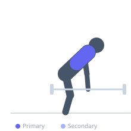
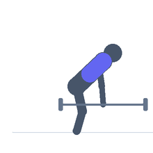

Exercise guide / Behind-the-Back Barbell Shrug
Behind-the-Back Barbell Shrug
The behind-the-back barbell shrug places the bar behind the body against the glutes, shifting the line of force to target the mid and upper trapezius with the shoulders in a slightly retracted position. This altered angle can reduce the anterior shoulder dominance common with front-loaded shrug variations and improve the peak contraction quality of the upper traps. It is typically performed from a power rack or Smith machine for safety.
Primary muscles
trapezius upper
Secondary muscles
trapezius middle
teres major
Stabilizers
flexor carpi radialis
Equipment
Standard Barbell
Optional
Smith Machine
Lifting Straps


Starting position
- Stand with the barbell behind the body, gripped with a pronated (overhand) grip at approximately hip width. The bar rests against the upper glutes. Stand upright.
Setup
- Best performed from a power rack with the bar set at hip height, or using a Smith machine. The range of motion is slightly more limited than a front shrug.
Steps
- Step 1: Unrack the bar behind the body. Stand tall with arms straight.
- Step 2: Elevate the shoulders as high as possible, drawing them directly upward.
- Step 3: Hold the peak contraction for one second.
- Step 4: Lower the shoulders under full control to the starting position.
- Step 5: Allow the shoulders to depress fully before the next rep.
Coaching cues
- Shrug straight up — not forward or backward
- Touch your ears with your shoulders
- Full drop between every rep
Breathing
- Exhale on the shrug upward, inhale on the descent.
Range of motion
- Full shoulder elevation at the top, full depression at the bottom.
Tempo
- 1-1-2-0
Common mistakes
- Rolling the shoulders forward or backward — the motion is straight up and straight down
- Using excessive load, which prevents full elevation
- Failing to lower completely between reps, limiting the total range of motion
Safety
- The bar can scrape the lower back if gripped too wide — use a hip-width grip
- Avoid this exercise if there is any lower back or glute pain from the bar contact
Training
- hypertrophy: 10–15 reps
- strength: 6–10 reps
- hypertrophy: 3–4 sets
- Rest: {'hypertrophy': 90, 'strength': 120}